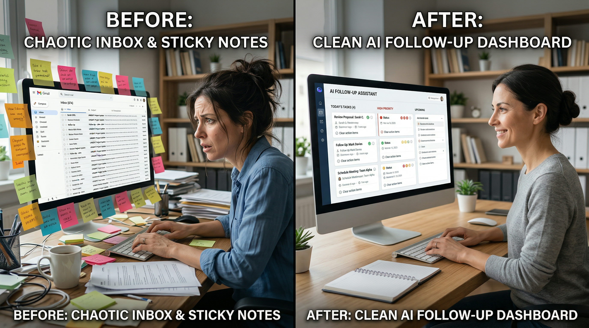
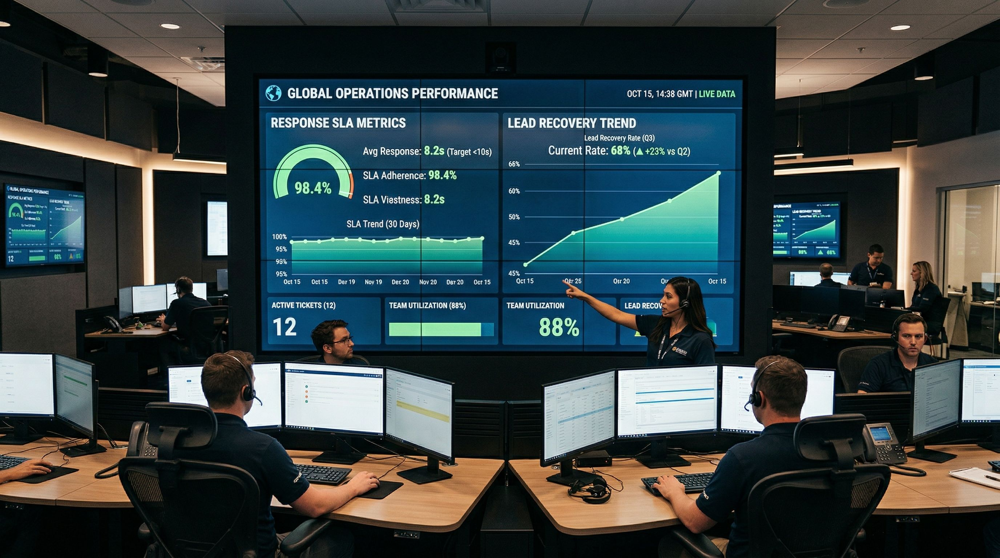

Bottleneck Zero gives you a simple AI follow-up engine to reply faster, revive ghosted leads, and move more prospects to paid calls.
Get Bottleneck Zero Now• Instant access • 7-day guarantee
You generate leads. Then replies get delayed.
Momentum dies. Trust drops. Deals disappear.
And you keep paying for traffic that never converts.
That leak compounds every single week.
This is a new mechanism built for speed and relevance.
Not generic templates. Not expensive retainers.
Just clear scripts, timing, and response logic that keeps leads moving.

Send the right first message in minutes.
$97 value
Handle “too expensive” and “let me think.”
$147 value
Reopen stalled leads with value-first follow-up.
$127 value
Launch fast without guesswork.
$67 value
Total value:$438 • Today:$27
Built from real-world automation workflows where speed + relevance consistently outperforms delay + volume.
Target first-response window for hot leads.
Structured ghost-revival sequence included.
Core modules designed for immediate implementation.

That’s exactly why this exists. It removes rewrite fatigue and decision drag.
One recovered lead can pay for this many times over.
This is sequence logic + timing, not random copy snippets.
If you have leads and follow-up delays, yes. The mechanics are universal.
Implement the framework. If it’s not useful, request a refund within 7 days.
Simple. No friction.
Get Bottleneck Zero now and activate your 24-hour follow-up engine.
Get Bottleneck Zero for $27Instant delivery • Designed for fast implementation • 7-day guarantee